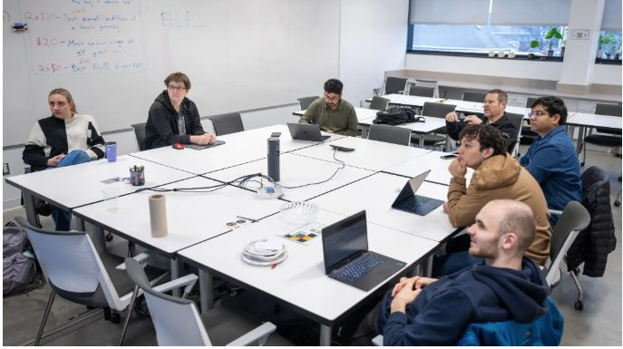

Computational Modeling for Fungicide Discovery
University of Idaho
Contributed to a multidisciplinary research project pioneering the use of molecular modeling and computational simulations for the development of novel fungicides targeting potato pathogens.